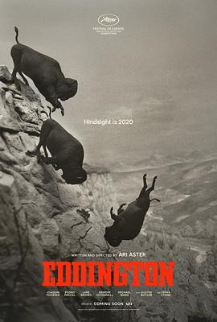

6.5
爱丁顿
Eddington
2025
美国
评分 6.5
导演:
阿里·艾斯特（Ari Aster）
演员:
华金·菲尼克斯（Joaquin Phoenix） / 佩德罗·帕斯卡（Pedro Pascal） / 艾玛·斯通（Emma Stone） / 奥斯汀·巴特勒（Austin Butler） / 卢克·葛莱姆斯（Luke Grimes） / 迈克尔·沃德（Micheal Ward）
类型:
剧情,喜剧,西部
剧情简介
2020年春末，美国新墨西哥州的一个小镇爱丁顿，疫情笼罩、戴口罩已成敏感话题。 sheriff 乔·克罗斯（Joaquin Phoenix 饰）拒绝遵守卫生令，他将自己逼入一场与市长特德·加西亚（Pedro Pascal 饰）之间的权力对决。政治斗争、社交媒体冲突和邻里关系在这片沙漠边缘被点燃。乔的妻子路易丝（Emma Stone 饰）在家中挣扎于丈夫的高压世界，母亲黛恩深陷各种阴谋论，阴影在家庭内部扩散。与此同时，市长在竞选中提出建立大型数据中心的方案，试图从疫情混乱中获得利益。乔在一次公开事件中，被特德羞辱，两人的对抗迅速失控。当抗议、枪战、爆炸交织在一起，爱丁顿这座小镇被推向边缘：警察、土著部落成员、宅男网络极端分子、社交媒体话语者——每个人都仿佛被一个看不见的线牵引。乔在疯狂中滑落，他的选择、怨恨和报复塑造了一场荒诞又血腥的现代西部。影片既是西部片的远荒风景，也是疫情时代美国裂痕的隐喻。荒无人烟的荒漠、空旷的选举集会、深夜的对峙场景，一幕幕展现出信任如何瓦解、社区如何分化。阿里·艾斯特用黑色幽默和荒诞暴力，把一座小镇的政治漩涡拍成一出时代寓言。